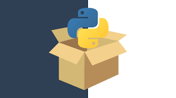
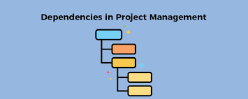
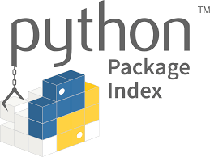

Introduction
Welcome to the world of Python packages! If you’ve embarked on your coding journey using the Pyton language, chances are you’ve encountered Python packages. Some widely-used examples are numpy, pandas, and scikit-learn for machine learning models. In this tutorial, we’ll delve into the process of crafting your own Python package and publishing it on the Python Package Index(PyPI), a platform designed for hosting python packages. This enables others to seamlessly leverage your work with a simple import statement.
Python packages offer a structured and modular approach to organizing code, bundling related functionalities, classes, and resources. This results in a well-organized and scalable codebase, simplifying development, maintenance, and collaboartion –essential tools for Python developers.
Why Use Python Packages:

- Modularity: Packages help break down complex projects into manageable and modular units, fostering a more organized code structure. This modularity also simplifies writing test cases targetting specific sections and functions.
- Reusability: Once written, packages can be reused across various projects, saving time and effort by leveraging existing code.
- Maintainanility: Packages facilitate easier maintenance and updates, allowing developers to focus on specific parts of a project without affecting the entire codebase.
- Dependency Management: Packages enable parallel development, where team members can work independently on different modules, promoting collaboration and efficiency.
- Version Control: Packages support versioning, ensuring compatibility and making it easier to manage changes in a project over time.
Understanding and harnessing the power of Python packages is a fundamental skill for any Python developer. So, let’s dive in and explore how to create, use, and benefit from these modula building blocks in your Python projects!
Building a Python package from scratch
Through this guide, I’ll be guide you through the process of creating a Python package from the ground up, using the autopredictor package. As a contributor to the collaborative team behind this project, our goal is to simplify the repetitive task of regression model selection and comparision within the machine learning workflow.
The autopredictor package accelerates the exploration of eight regression models by evaluating them with default settings across four socring metrics. This approach allows users to quickly grasp the performance of each model. autopredictor caters to both beginners by eliminating the need for complicated model arguments and to experts by providing baseline results. You can find the source code of this package here and the vingette documentation here.
Source Code Development
Before getting into the intricacies of package creationg, it is essential to develop the code we intend to transform into a package. This initial step aids in organizing the code into distinct functions, forming the foundation for the subsequent packaging process. In this context, we refer to the core source code equivalent to those found under the src/autopredictor folder in this package repository. Once you have this code prepared, we can seamlessly process to establish the structure of our package.
Package structure
A python package conventionally adheres to a specific structure, emphasizing the advantages of modularity and simplicity. The structure for the autopredictor package is outlined below, with files neatly categorized into three main groups:
- Package documentation:
README.md: Provides essentioal information and instructions for users, typically a summary of what the package achieves.docs/: Contains additinal documentation files or folder for example vingette.pyproject.toml: Instruction on how to build and install the package on a computer.
- Package source code:
__init__.py: marks the directory as a Python package.- Module files (
.py): Houeses the core functinoalities, classes, and utilities.
- Package tests
test/: Contains files for testing the package, ensuring functinality and realiability.
Checkpoint:
Make sure that you have installed the necessary tools, namely cookiecutter and poetry, as these will be integral to the package-building process in this tutorial. Follow the Poetry installation instructions for the poetry package. For cookiecutter, execute the following command in your terminal:
conda install -c conda-forge cookiecutterSetting up remote version control
Now is an opportune moment to establish a GitHub repository for version control. Begin by creating a new repository under your preferred GitHub account or organization. Follow the instructions provided on GitHub to link it with the package directory you recently generated using cookiecutter. This integration will facilitate version tracking and collaborative development for your package.
Integrating the Developed source code into the Package Directory
Place all the developed source code within modules in the src/autopredictor/ directory. Although the cookiecutter has automatically created a module named autopredictor.py, you have the flexibility to organize your functions under a single module or distribute them across multiple modules based on your preference.
Installing your package
Several tools are available for delveloping installable Python packages, such as poetry, flit, and setuptools. In this tutorial, we will utilize poetry, a modern packaging tool that offers straightforward and efficient commands for developing, installing, and distributing Python packages.
The central configuration file for a poetry managed package is the pyproject.toml file. This file contains all the metadata and installation instructions for the package. During the setup, cookiecutter has automatically generated a base pyproject.toml file, which is organized into four main sections:
[tool.poetry]: Defines the package metadata.[tool.poetry.dependencies]: Lists of dependencies required for general users.[tool.poetry.group.dev-dependencies]: Specifies dependencies required for developers.[build-system]: Identifies the build tools required to construct the package.
It is crucial to create a new virtual environment dedicated to your package to prevent potential conflicts. To establish a new virtual enviuronment with python, utilize the command conda create --name autopredictor python=3.9 -y. To acitvate the environment, execute the command conda activate autopredictor. This ensures a clean and isloated environment for your package installation. To install your package, run the command poetry install from the directory where the pyrpoject.toml file is located.
Adding dependencies to your package

If your package relies on additional dependencies, incorporating them into the pyproject.toml file with poetry is straightforward. You have two options: manual addition or utilizing commands.
For instance, the autopredictor package utilizes scikit-learn as one of its dependencies. Use the command poetry add scikit-learn to effortlessly include this dependency in your environemnet.The scikit-learn entry will be automatically appended to the pyproject.toml file under the [tool.poetry.dependencies] section.
If you prefer the manual approach, simply add scikit-learn = "^1.3.2" under the [tool.poetry.dependencies] section in the pyproject.toml file directly. This sets a version constraint, specifying that the package requires version 1.3.2 or any higher version of scikit-learn. poetry will automatically generates a poetry.lock file which serve as a recod of all the exact version of the dependencies used in a project during installation, removal, or updating of any dependency.
Testing, Code Coverage, and Documentation
While we won’t delve into extensive details on these sub-topics, it is imperative to create robust test units for the functions in your package and achieve comprehensive code coverage. To integrate pytest for developing unit tests, execute the command poetry add --group dev pytest pytest-cov. This command automatically updates the [tool.poetry.group.dev-dependencies] section in the pyproject.toml file. Don’t forget to commit and push these changes to your repository.
Crafting a well-documented example vignette is essential for users to comprehend how your package functions and troubleshoot effectively. This documentation not only enhances the usability of your package but also contributes to a more user-friendly and collaborative development environment.
Building and publishing your package on PyPI

With all the components in place from the previous section, your package is now poised for building and publishing. Building entails creating a ‘distribution package,’ a unified archive file encompassing all the necessary files and information for package installation via tools like pip. Users can easily install your package using a command such as pip install autopredictor. Distribution packages can take the form of sdists or wheels.
To generate your ‘distribution package,’ execute the command poetry build from your root package directory. This will generate a new directory named dist/. Users can install your package by accessing this distribution package.
To further streamline the process, you can publish your distribution package on PyPI. Begin by signing up for a PyPI account and create a new API token for PyPI authentication. Add your API token to Poetry and publish your package using the following commands:
poetry config pypi-token.pypi your-api-token
poetry publish --buildThese steps simplify the distribution and accessibility of your package, making it readily available for the broader Python community.
Continuous Integration and Continuous Deployment (CI/CD) for autopredictor
In modern software development, CI/CD pipelines are crucial for ensuring that code changes are automatically tested, validated, and deployed. Implementing CI/CD for your Python package helps maintain high-quality code, streamline the development process, and minimize manual intervention during deployments. In the autopredictor project, we utilized GitHub Actions to set up a robust CI/CD pipeline that automates testing, coverage tracking, documentation building, and package deployment.
Setting up CI/CD with GitHub Actions
GitHub Actions is a powerful automation platform that allows developers to define workflows for automating tasks such as testing and deployment. Here’s an overview of how the CI/CD pipeline is configured for the autopredictor package:
- Continuous Integration (CI) The CI job is triggered whenever code is pushed to the repository or a pull request is opened. It ensures that the new changes are thoroughly tested and meet the project’s quality standards.
- Set Up Python Environment: The pipeline begins by setting up a Python environment using Python 3.9.
- Install Dependencies: The code repository is checked out, and the necessary dependencies are installed using poetry.
- Run Tests with Pytest: Automated tests are run using pytest, with coverage tracking enabled to ensure the codebase is well-tested.
- Upload Coverage to Codecov: The coverage report is uploaded to Codecov, a tool for tracking and analyzing code coverage over time.
- Build Documentation: The project documentation is built automatically to ensure it is always up to date.
- Continuous Deployment (CD) The CD job is responsible for deploying the package once the CI checks have passed. This job only runs when changes are pushed to the main branch, ensuring that only stable code is deployed.
- Prepare Release with Python Semantic Release: This step automatically determines the next version number based on the commit history, generates release notes, and creates a Git tag.
- Publish to TestPyPI: Before deploying to the official Python Package Index (PyPI), the package is first published to TestPyPI for validation.
- Test Installation from TestPyPI: The package is then installed from TestPyPI to ensure it was published correctly and can be installed by users.
- Publish to PyPI: If all the previous steps succeed, the package is published to PyPI, making it available to the broader Python community.
- Publish to GitHub Releases: The package distributions are also uploaded to GitHub Releases, providing an additional source for users to download the package.
Benefits of CI/CD in autopredictor
Implementing CI/CD in the autopredictor project brings several advantages:
- Automated Testing: Ensures that all changes are tested automatically, reducing the risk of introducing bugs.
- Consistent Documentation: Documentation is built and updated automatically, ensuring users always have access to the latest information.
- Streamlined Deployment: The package is automatically published to PyPI and GitHub Releases upon passing all checks, reducing manual deployment efforts.
- Improved Code Quality: Continuous code coverage tracking helps maintain a high level of test coverage, ensuring code quality over time.
Conclusion
Congratulations on reaching this milestone! By following this tutorial, you have successfully created, developed, and published your first Python package on PyPI. This achievement not only demonstrates your proficiency in package development but also opens up opportunities for collaboration, contribution, and sharing your work with the wider Python community. As you continue your journey in software development, the skills you’ve gained in packaging and distribution will undoubtedly prove valuable. Best of luck with your future projects, and feel free to explore more advanced features and practices in the dynamic world of Python packaging. Happy coding!
Git Hub repository
Please find the source code repository here.
Usage Documentation
Please find the vingette documentation for autopredictor‘s usage example and the functions’ descriptions here.
Citation
@online{voon2024,
author = {Voon, Sharon},
title = {Autopredictor: {Python} {Package}},
date = {2024-02-11},
url = {https://s-voon.github.io/posts/autopredictor_package/},
langid = {en}
}